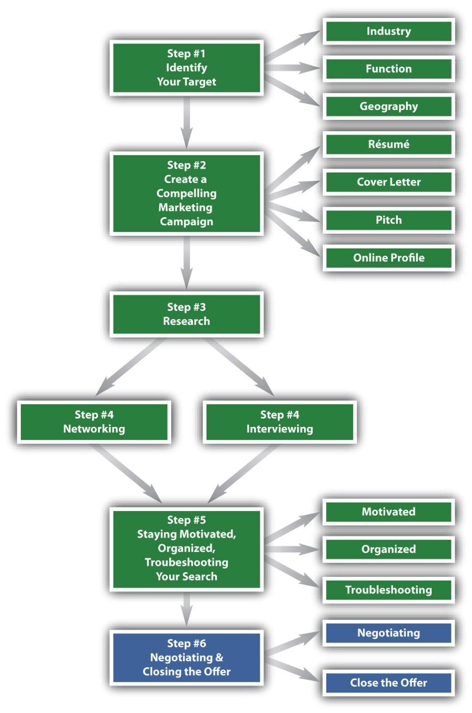

Figure 10.1 The Six-Step Job Search Process: Step 6
A Quick Review of the Six Steps
By now, you have read about and studied five of the six steps in a job search and you are ready to learn about the final step: Step 6, Negotiating and Closing the Offer! This last step should be fully supported by all five that came before it:
Now you enter step 6 with quite a lot of knowledge, research, and forethought that will springboard you into the negotiation phase and allow you to successfully close the offer.
What is negotiationA dialogue between two or more people, intended to reach an understanding that will satisfy all parties.? It’s a dialogue between two or more individuals to reach a point of understanding that pleases both parties. Negotiation requires skills just like any other step in the job search, and this chapter will give you strategies to strengthen those skills.
Many people feel quite a bit of anxiety at the thought of negotiating, and that shouldn’t be the case. We negotiate for things all the time: where to have lunch or dinner, what movie to see, what channel to watch. It’s true that negotiating for a better offer is more important than where to have dinner, but some of the same tactics and strategies apply. We’ll discuss them in great detail.
We negotiate with a host of individuals, including both family and friends and business managers and colleagues. With our family and friends, we negotiate where and when to go on vacation and what movie we should see. With our business colleagues, we negotiate work schedules, promotions, job responsibilities, and of course, salary increases and bonuses. We negotiate with our managers, our colleagues, our vendors, our clients, our consultants, and our peers at other firms.
Your ability to negotiate effectively impacts your relationships and your career. Relationships, team roles, project support, and resources, in addition to project deadlines, must be discussed and agreed on by many parties.
A note about the negotiation skills of women versus men: women and men may have the same amount of education; however, there has been a workplace trend in which women get paid less than men. According to ABC.com, on average, women earn just 77 cents for every dollar a man gets.Tory Johnson, “Men vs. Women at the Bargaining Table,” Good Morning America, September 26, 2007, accessed June 3, 2011, http://abcnews.go.com/GMA/PersonalBest/story?id=3651753&page=1. One explanation for this wage discrepancy is that women don't negotiate as often as men do, and if you don’t negotiate, you don’t receive any increase. Another explanation is that men may enjoy the negotiation process, and see it as a competitive sport, whereas women tend to avoid it at all costs. The following link should be viewed by both men and women, as it shares negotiation strategies that can be used by both; however, this piece focuses on how women especially need to negotiate: http://www.sixfigurestart.com/career-coaching. Whether you are a man or a woman, the strategies outlined in this chapter will help you negotiate successfully!
What Can Be Negotiated? Most people think negotiation refers only to compensation. While compensation is certainly one of the main things you may want to consider negotiating, there are many other things to consider:
This list is lengthy, but far from exhaustive. It’s important to identify the one or two items that mean the most to you, and select those as negotiation targets. It’s also important to note that some offers will be far better than you anticipated, and you will want to accept right away. As long as you conduct your research, and know with a good amount of certainty that the offer is exactly what it should be, go ahead and accept. However, it’s strongly recommended that you wait at least one day before doing so (it’s always a good idea to run the offer by someone who is experienced in what represents a good offer and what does not). Others will choose to negotiate for one or two components of the offer they wish were better. Either way, ensure that your research clarifies whether or not your offer is within the proper compensation range.
How Do You Close the Offer? The second part of step 6 is Close the OfferMeans that once you are a final candidate, you distinguish yourself above all the others to actually be the one to receive the offer., which means that once you are a final candidate among a final slate of candidatesIdentifies you as a final candidate, among others (usually two or three)., you must distinguish yourself above all the others to receive and then close the offer. Learning the strategies in this chapter will help you to distinguish yourself and get that offer.
Step 6 is the last step in the job search, and the most important of all. Without step 6, there would be no offer, and no job. Each section of this chapter will strengthen the skills necessary to negotiate and close the offer. These strategies are followed by a question-and-answer section at the end of this chapter that should highlight options you can consider when you do get your offer. Let’s begin!